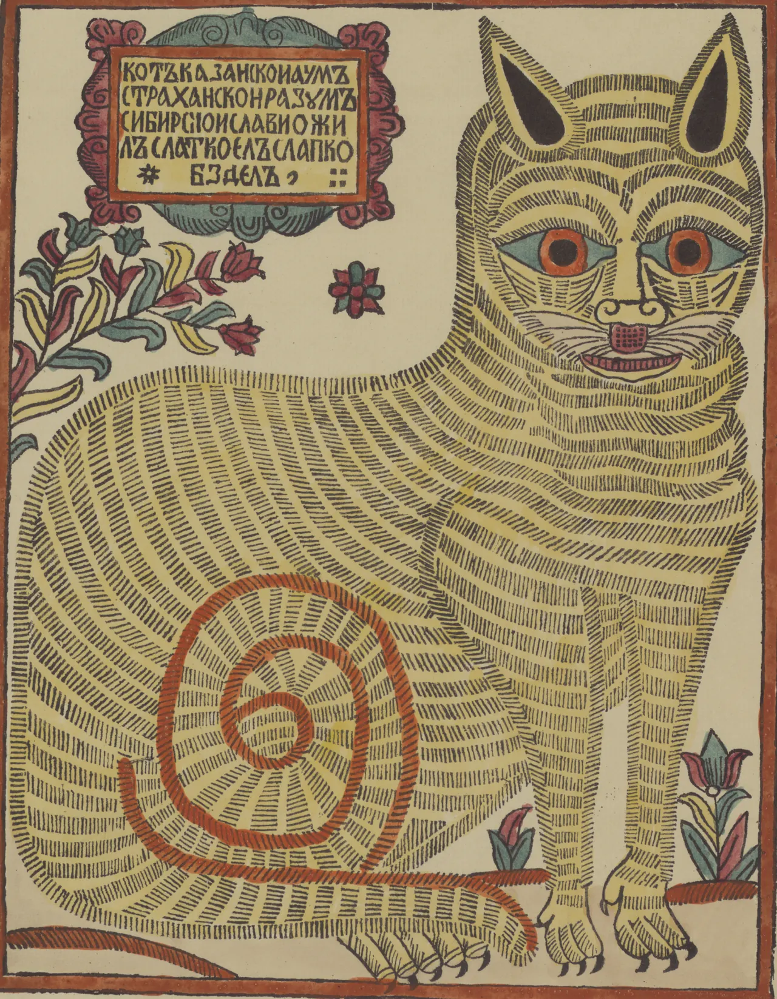

Touch a mouse’s lane, or turn the bum down it, and as it reaches its ring hold its colour.
54.00 cm H2O
1.00×
how to play
Mice walk the lanes to a song. Turn the bum down a mouse’s lane, or click the lane, and as it reaches its ring hold the key of its colour.
- s d f
- hold to fart teal, yellow, red; another while held changes it
- ← → h l
- turn the bum
- space
- hold to fart at the knob’s push
- ↑ ↓ k j
- the push; with shift, the tension
bumsf.art
a valve, shut
2026
– bytes
Bear down.